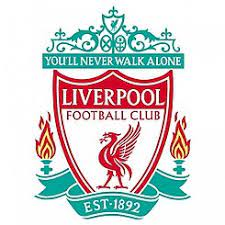

El Fútbol en el mundo moderno
El Fútbol en el mundo moderno
10/11/2021
Clubes y selecciones nacionales
El fútbol es normalmante llamado el "deporte rey" porque es el deporte más visto y practicado del mundo moderno. Una de las causas de su éxito es la perfecta y simple organización que tiene, que gente de cualquier edad puede entender. Los equipos se dividen en dos secciones llamadas "niveles": nivel de clubes y nivel de selecciones. Los clubes son equipos de fútbol que participan principalmente en competencias nacionales, es decir, aunque pueden participar en eventos internacionales, son los únicos que juegan partidos de competencias organizadas dentro de los países a los que se deben. Además, los clubes cuentan con jugadores de todas las nacionalidades posibles. Lógicamente, los clubes tienen más jugadores de la nacionalidad del país en el que juegan y hasta tienen ciertas reglas sobre la nacionalidad de sus jugadores, pero no están obligados por ninguna regla a tener jugadores de la misma nacionalidad. Las selecciones se refieren a un equipo con jugadores preseleccionados por un entrenador para representar a su país. Los jugadores solo pueden jugar para una selección en toda su carrera. Para elegir en qué selección jugar deben contar con la nacionalidad, por eso casi todos juegan para el país en el que nacieron, pero pueden utilizar una nacionalidad obtenida por algún progenitor o por residencia.
 Ranking: Los mejores jugadores de la historia
Ranking: Los mejores jugadores de la historia Los Organismos que Rigen el Deporte
Los Organismos que Rigen el Deporte